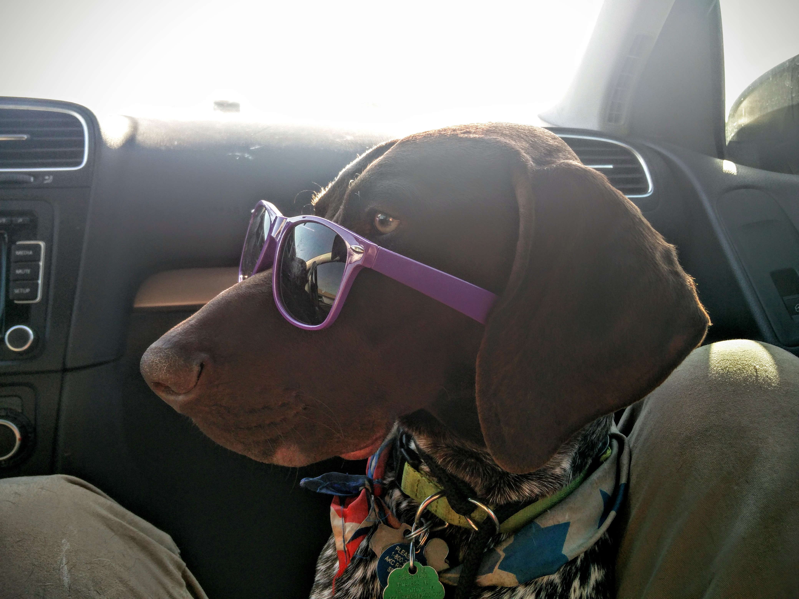

Well I have a big story that I could probably write a book about but lets start with
This is a picture of me when I was in the Corps of Cadets at Texas A&M University. This was a rowdy bunch of guys and I enjoyed my time with them in college.
This is a picture of some of the key members of my fiance's family. I don't have much of a family of my own anymore but this group of people is more than enough to make up for it.
This is my partner in crime or should I say the criminal I pick up after. Dex is a German Short Haired Pointer and is a very energetic. He is by far the biggest troublemaker in my house and is also the most emotional dog I have ever owned.